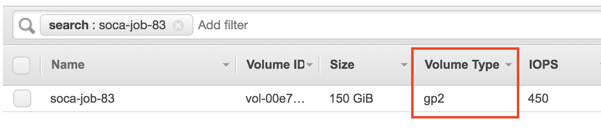
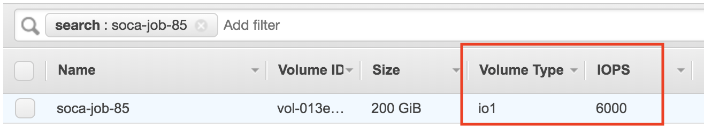

Understand backend storage
Scale-Out Computing on AWS gives you the flexibility to customize your storage backend based on your requirements
- You can customize the root partition size
- You can provision a local scratch partition
- You can deploy standard SSD (gp2) or IO Optimized SSD (io1) volumes
- Scale-Out Computing on AWS automatically leverages instance store disk(s) as scratch partition when applicable
- In term of performance: Instance Store > EBS SSD IO > EBS SSD Standard > EFS
Refer to this link to learn more about EBS volumes.
EFS (shared) partitions¶
/data partition¶
/data is an Elastic File System partition mounted on all hosts. This contains the home directory of your LDAP users ($HOME = /data/home/<USERNAME>). This partition is persistent. Avoid using this partition if your simulation is disk I/O intensive (use /scratch instead)
/apps partition¶
/apps is an Elastic File System partition mounted on all hosts. This partition is designed to host all your CFD/FEA/EDA/Mathematical applications. This partition is persistent. Avoid using this partition if your simulation is disk I/O intensive (use /scratch instead)
The corresponding EFS file system is deployed with bursting Throughput mode which depends on burst credits. /apps has cron jobs that monitor the status of the cluster, scale-up and scale-down the cluster, and is also running the web application. If the cluster stays up and running for 1+ months and not much additional applications are installed under /apps, then EFS file system might run out of burst credits which could impact the web application. Starting v2.6.0, the solution deploys CloudWatch Alarms to monitor the burst credits for /apps EFS file system. When burst credits are close to be depleted, a lambda function is triggered to change the Throughput mode to provisioned at 5 MiB/sec. This increases the monthly cost of EFS by ~$30/month (for us-west-2 and us-east-1 regions). After some time, the file system would have earned enough burst credits, so the lambda function changes Throughput mode back to bursting as it is more cost effective. Click here to learn more about EFS Throughput modes
FSx¶
Scale-Out Computing on AWS supports FSx natively. Click here to learn how to use FSx as backend storage for your jobs.
Instance (local) partitions¶
Below are the storage options you can configure at an instance level for your jobs. If needed, add/remove/modify the storage logic by editing ComputeNode.sh script to match your requirements.
Root partition¶
By default Scale-Out Computing on AWS provision a 10GB EBS disk for the root partition. This may be an issue if you are using a custom AMI configured with a bigger root disk size or if you simply want to allocate additional storage for the root partition.
To expand the size of the volume, submit a simulation using -l root_size=<SIZE_IN_GB> parameter.
user@host:qsub -l root_size=25 -- /bin/sleep 600
Result: Root partition is now 25GB
user@host: lsblk
NAME MAJ:MIN RM SIZE RO TYPE MOUNTPOINT
nvme0n1 259:0 0 25G 0 disk
├─nvme0n1p1 259:1 0 25G 0 part /
└─nvme0n1p128 259:2 0 1M 0 part
user@host: df -h /
Filesystem Size Used Avail Use% Mounted on
/dev/nvme0n1p1 25G 2.2G 23G 9% /
Scratch Partition¶
Info
- It's recommended to provision
/scratchdirectory whenever your simulation is I/O intensive. /scratchis a local partition and will be deleted when you job complete. Make sure to copy the job output back to your $HOME/scratchis automatically created when Instance supports local ephemeral storage
Request a /scratch partition with SSD disk¶
During job submission, specify -l scratch_size=<SIZE_IN_GB> to provision a new EBS disk (/dev/sdj) mounted as /scratch
user@host: qsub -l scratch_size=150 -- /bin/sleep 600
Result: a 150 GB /scratch partition is available on all nodes
user@host: lsblk
NAME MAJ:MIN RM SIZE RO TYPE MOUNTPOINT
nvme1n1 259:0 0 150G 0 disk /scratch
nvme0n1 259:1 0 10G 0 disk
├─nvme0n1p1 259:2 0 10G 0 part /
└─nvme0n1p128 259:3 0 1M 0 part
user@host: df -h /scratch
Filesystem Size Used Avail Use% Mounted on
/dev/nvme1n1 148G 61M 140G 1% /scratch
To verify the type of your EBS disk, simply go to your AWS bash > EC2 > Volumes and verify your EBS type is "gp2" (SSD). Refer to this link for more information about the various EBS types available.

Request a /scratch partition with IO optimized disk¶
To request an optimized SSD disk, use -l scratch_iops=<IOPS> along with -l scratch_size=<SIZE_IN_GB>. Refer to this link to get more details about burstable/IO EBS disks.
user@host: qsub -l scratch_iops=6000 -l scratch_size=200 -- /bin/sleep 600
Looking at the EBS bash, the disk type is now "io1" and the number of IOPS match the value specified at job submission.

Instance store partition¶
Free storage is always good
You are not charged for instance storage (included in the price of the instance)
Some instances come with default instance storage. An instance store provides temporary block-level storage for your instance. This storage is located on disks that are physically attached to the host computer and is removed as soon as the node is deleted.
Scale-Out Computing on AWS automatically detects instance store disk and will use them as /scratch unless you specify -l scratch_size parameter for your job. In this case, Scale-Out Computing on AWS honors the user request and ignore the instance store volume(s).
When node has 1 instance store volume¶
For this example, I will use a "c5d.9xlarge" instance which is coming with a 900GB instance store disk.
user@host: qsub -l instance_type=c5d.9xlarge -- /bin/sleep 600
Result: Default /scratch partition has been provisioned automatically using local instance storage
user@host: lsblk
NAME MAJ:MIN RM SIZE RO TYPE MOUNTPOINT
nvme1n1 259:0 0 838.2G 0 disk /scratch
nvme0n1 259:1 0 10G 0 disk
├─nvme0n1p1 259:2 0 10G 0 part /
└─nvme0n1p128 259:3 0 1M 0 part
user@host: df -h /scratch
Filesystem Size Used Avail Use% Mounted on
/dev/nvme1n1 825G 77M 783G 1% /scratch
When node has more than 1 instance store volumes¶
In this special case, ComputeNode.sh script will create a raid0 partition using all instance store volumes available.
For this example, I will use a "m5dn.12xlarge" instance which is shipped with a 2 * 900GB instance store disks (total 1.8Tb).
user@host: qsub -l instance_type=m5dn.12xlarge -- /bin/sleep 600
Result: /scratch is a 1.7TB raid0 partition (using 2 instance store volumes)
user@host: lsblk
NAME MAJ:MIN RM SIZE RO TYPE MOUNTPOINT
nvme1n1 259:0 0 838.2G 0 disk
└─md127 9:127 0 1.7T 0 raid0 /scratch
nvme2n1 259:1 0 838.2G 0 disk
└─md127 9:127 0 1.7T 0 raid0 /scratch
nvme0n1 259:2 0 10G 0 disk
├─nvme0n1p1 259:3 0 10G 0 part /
└─nvme0n1p128 259:4 0 1M 0 part
user@host: df -h /scratch
Filesystem Size Used Avail Use% Mounted on
/dev/md127 1.7T 77M 1.6T 1% /scratch
Combine custom scratch and root size¶
You can combine parameters as needed. For example, qsub -l root_size=150 -l scratch_size=200 -l nodes=2 will provision 2 nodes with 150GB / and 200GB SSD /scratch
Change the storage parameters at queue level¶
Edit /apps/soca/$SOCA_CONFIGURATION/cluster_manager/settings/queue_mapping.yml to configure default storage settings at a queue level:
queue_type:
compute:
# /root will be 30 GB and /scratch will be a standard 100GB SSD
queues: ["queue1", "queue2", "queue3"]
instance_ami: "ami-082b5a644766e0e6f"
instance_type: "c5.large"
scratch_size: "100"
root_size: "30"
# .. Refer to the doc for more supported parameters
memory:
# /scratch will be a SSD with provisioned IO
queues: ["queue4"]
instance_ami: "ami-082b5a644766e0e6f"
instance_type: "r5.large"
scratch_size: "300"
scratch_iops: "5000"
instancestore:
# /scratch will use the default instance store
queues: ["queue5"]
instance_ami: "ami-082b5a644766e0e6f"
instance_type: "m5dn.12large"
root_size: "300"